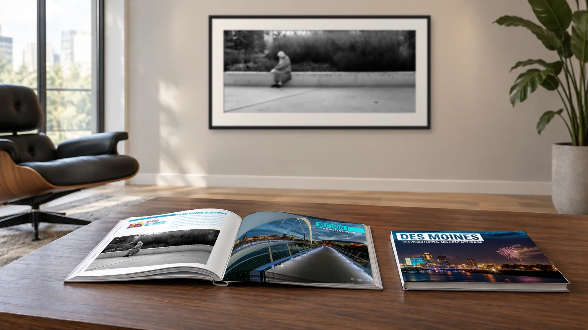
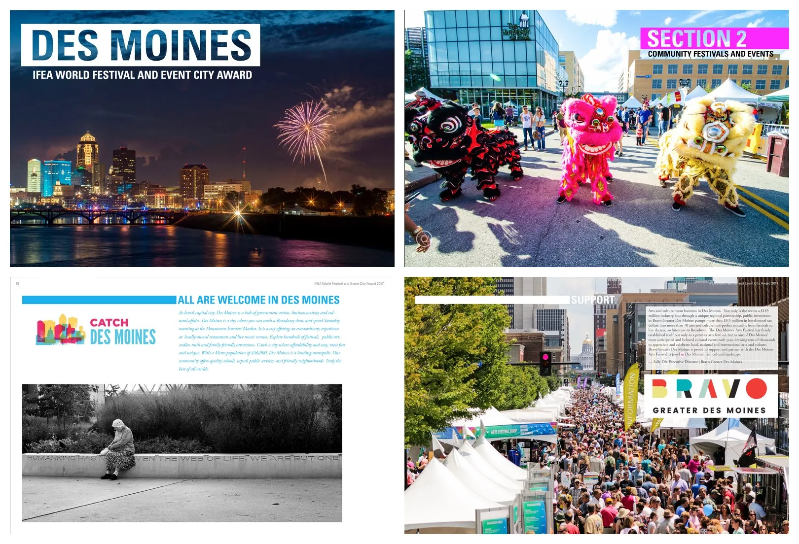
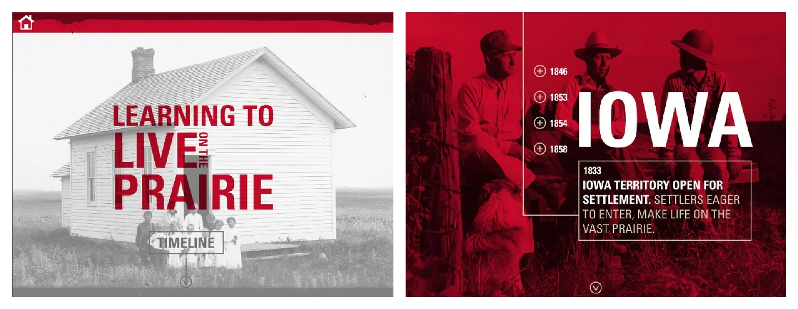
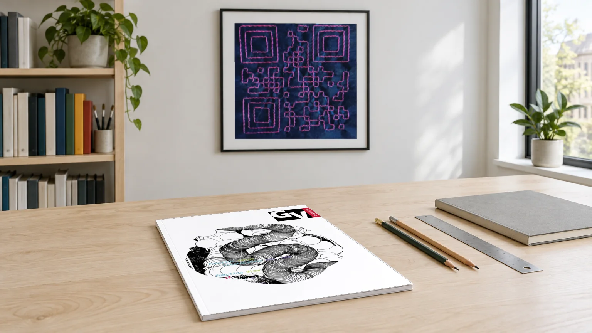
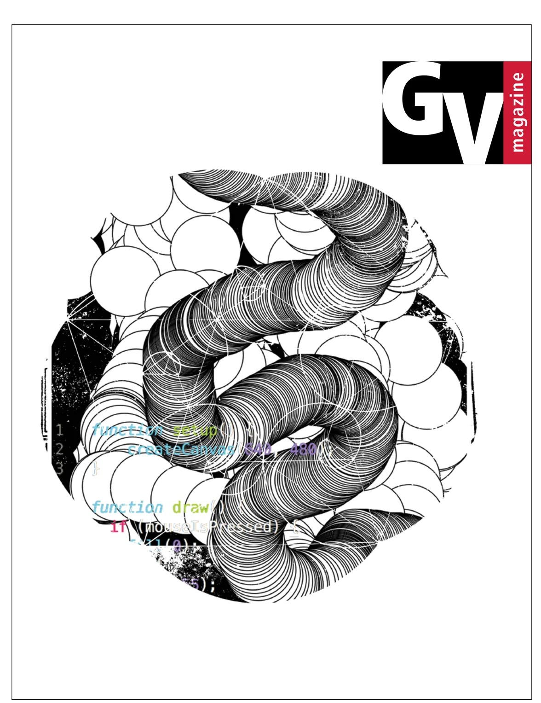

175th anniversary history book
Prepared for Chris Knudson, Chief Marketing Officer and Director of Strategic Marketing & Communication, Wartburg College. As an Iowa-based designer, I propose to design the 175th anniversary history book for a fixed fee of $4,000 and to deliver final print-ready files by May 28, 2027.
- Prepared by
- Cyndi Wiley
- Book
- About 60 pages, hardbound, 9.25 × 12 inches
- Design fee
- $4,000, fixed
- Final files
- May 28, 2027
Introduction and qualifications
I am an Iowa-based graphic designer and design educator, and my full portfolio is at cyndiwiley.github.io. My career began in magazine and book publishing, where I designed annual books and magazine spreads and prepared files for press.
I work with one client at a time. This gives each project my full focus, and it allows clear, frequent communication and close attention to detail.
From 2012 to 2019 I taught typography and publication design at Grand View University and served as department chair. I now teach web and digital design at the University of Maryland Global Campus. I hold a PhD in Human Computer Interaction and an MFA in Graphic Design from Iowa State University. My BA in Studio Art, with a minor in art history, is from the University of Missouri-Columbia.
| Role | Organization | Years | Relevance to this book |
|---|---|---|---|
| Associate Professor (Collegiate Faculty) | University of Maryland Global Campus | 2026–present | Teaches web and digital design to adult learners |
| Assistant Teaching Professor and Digital Accessibility Lead | Iowa State University | 2018–2026 | Institutional publishing standards and accessible documents |
| Associate Professor of Art and Design; Department Chair from 2015 | Grand View University, Des Moines | 2012–2019 | Taught publication design |
| Creative Director | Nutraceutics Corporation, St. Louis | 2001–2007 | Seasonal magazine-catalog and brochures, from layout through press |
| Senior Graphic Designer | Intaglio Creative, St. Louis | 2000–2001 | Missouri Baptist printed course catalog book |
| Art Director and Designer | The Waterways Journal, St. Louis | 1999–2000 | Five annual books each year, plus covers and feature spreads for HeartLand Boating magazine |
| Electronic Production Manager | Reilly Publishing, Schaumburg, Ill. | 1998–1999 | Two monthly publications, Medical Electronic and Equipment News and OutPatient Care magazine; prepress and print-ready files |
My design work has been published in Print magazine (2003), Creative Quarterly (2010), LogoLounge Master Library (2010) and The Big Book of Packaging (2010).
Relevant experience and work samples
My most relevant work is a 77-page civic publication built on full-bleed photography and an interactive history of a land-grant university built on archival photographs. The ISU Extension history and the GV Magazine cover link to their pages on my portfolio site.
| Sample | Year | My role | What it shows |
|---|---|---|---|
| Iowa State University Extension and Outreach interactive history | 2020 | Designer | Chapter-style sections on land-grant origins, outreach to farm families, prairie settlement and the legacy today. The screens are built on archival photographs and historic maps, with a timeline view. |
| Des Moines IFEA World Festival & Event City submission, for Catch Des Moines and the Des Moines Arts Festival | 2017 | Designer | A 77-page landscape publication in six sections, covering every festival and event in the metro area and produced on a short timeline. Section openers use full-bleed photography, and a month-by-month calendar lists the year's events. Des Moines received the designation that year. |
| GV Magazine cover, Grand View University | 2017 | Cover artist | Cover for the university's alumni magazine, produced with its marketing department |

The work above covers the content areas named in the RFP. Institutional and educational content is part of my seven years at Grand View University and my roles at Iowa State and UMGC. Historical content is the core of the ISU Extension history.





Creative approach
I would present two concept directions in January, each shown as a cover and two sample spreads at the 9.25 × 12 inch trim. Both follow the college's brand standards. Both are also informed by the reference copy of Still on the Move, so the new book and the 2002 book read as a pair.
Two directions
- Direction A, Continuity. After a review of Still on the Move, this direction keeps its typographic hierarchy and caption style wherever they fit the current brand. Each chapter opens with a full-bleed photograph and a short introduction.
- Direction B, Chronicle. A running timeline band along the foot of each spread marks the years 2002 through 2027. Chapter openers use large year numerals, and the band links events in the text to their dates.
Chapter order and content organization would follow the college's outline in either direction.
Design system
| Element | Approach |
|---|---|
| Grid | A 12-column grid with generous outer margins, so a photograph can run at one column or across a full spread |
| Typography | Wartburg brand typefaces for headings; body text near 10.5/15 pt for reading at table distance; captions near 8/11 pt in a contrasting weight |
| Color | The brand palette for headings and the timeline; neutral backgrounds so photographs from different years look consistent |
| Image treatment | One correction standard for tone and color across scanned prints and digital files from every year |
| Pacing | Photo-led spreads alternate with text-led spreads to hold the 50/50 balance named in the RFP |
| Editorial elements | Chapter openers, pull quotes, sidebars, timelines and captions with credit lines |
| Cover | Case wrap or dust jacket, built on the publisher's template |
Photographs
Within one week of receiving the photographs on January 30, I would audit every file for resolution and credit information. Consumer cameras from the early 2000s produced small files, so the audit lists the largest size at which each image prints well at 300 ppi. Layout decisions then follow what will reproduce cleanly, and the college receives a list of any problem images in early February.
Basic correction of tone and color is included in the fee, as is conversion to the publisher's color profile. Restoration of a damaged print would be quoted in writing before any work starts.
Draft page map
| Section | Pages (approx.) |
|---|---|
| Front matter, such as the title page and contents | 4 |
| Chapters, organized as the college decides | 48 |
| Timeline, 2002 to 2027 | 4 |
| Acknowledgments and image credits | 4 |
| Total | 60 |
The publisher's signature size may move the final count to 56 or 64 pages. If so, the page map would be adjusted with the college before layout begins.
Process and schedule
The schedule below keeps every date in the RFP and fits both revision rounds before final approval on May 24, 2027.
- I would work with one contact named by the Strategic Marketing & Communication Office. The office would send one consolidated set of comments for each review round.
- A 30-minute video check-in would take place every two weeks from January through May, with a progress PDF sent the day before.
- The project would be completed fully remote, and every meeting, including the kickoff, would be held by video.
- A shared log of decisions and open questions would be updated after each check-in.
| Date | Milestone | I deliver | The college provides |
|---|---|---|---|
| Dec 15, 2026 (RFP) | Selection and notification | Signed agreement | Agreement and the name of the project contact |
| Week of Jan 4, 2027 | Kickoff meeting | Image intake checklist and list of questions | Brand assets, publisher specifications, reference copy of Still on the Move, draft outline |
| Jan 22, 2027 | Concept presentation | Two directions, each with a cover and two sample spreads | Consolidated comments by Jan 29 |
| Jan 30, 2027 (RFP) | Final copy and photographs due | Photo audit by Feb 5 | Final copy and digitized photographs with credit information |
| Feb 12, 2027 | Design direction approved | Refined direction with grid and type styles | Approval of the direction |
| Feb 15 to Apr 15, 2027 | Page layout | Progress PDFs every two weeks | Answers to flagged questions within five business days |
| Apr 16, 2027 (RFP) | Initial complete design | Full book PDF with cover | |
| Apr 30, 2027 (RFP) | First review closes | Round 1 consolidated comments | |
| May 7, 2027 | Revision 1 | Revised book PDF | Round 2 consolidated comments by May 14 |
| May 19, 2027 | Revision 2 | Revised book PDF | Final approval by May 24 |
| May 24, 2027 (RFP) | Final approval | Preflight against publisher specifications | Written sign-off |
| May 28, 2027 (RFP) | Final files due | Print-ready package and final PDF proof, plus packaged InDesign files with links and transferable fonts |
If a date has to move, I would send a revised schedule in writing that still meets the May 28 delivery.
Fees and payment
The fee for design services is a fixed $4,000, which matches the college's budget. It is divided by phase below.
| Phase | Includes | Fee |
|---|---|---|
| 1. Creative direction, Jan to Feb 2027 | Kickoff, review of brand assets and Still on the Move, two concept directions, one refined direction | $1,000 |
| 2. Page design and layout, Feb to Apr 2027 | About 60 pages and the cover; photo selection, placement and basic correction; headings, captions, pull quotes and timelines | $2,000 |
| 3. Revisions, Apr to May 2027 | Two rounds of consolidated changes | $600 |
| 4. Production, May 2027 | Preflight to publisher specifications, print-ready PDF, packaged native files, final PDF proof | $400 |
| Total | $4,000 |
| Item | Terms |
|---|---|
| Concepts | Two initial directions, then one refined direction, included |
| Revision rounds | Two rounds after the initial complete design, included |
| Work outside scope | $75 per hour, quoted and approved in writing before work begins |
| Fonts | $0 expected. I would use the college's brand typefaces, and any added typeface would come from an open-license family that transfers with the files at no cost. |
| Stock imagery | $0 expected. Any stock image the college requests would be quoted and approved in writing, then billed at cost. |
| Licensing | $0 expected. Any third-party material would be disclosed and approved before use. |
| Travel | None. All meetings would be held by video. |
A revision round is one consolidated set of comments from the college. Changes after final approval, or new copy received after January 30, would be quoted as additional work.
| Payment | Due | Amount |
|---|---|---|
| 30% | On signing of the agreement | $1,200 |
| 40% | On delivery of the initial complete design, Apr 16, 2027 | $1,600 |
| 30% | On delivery of final files, May 28, 2027 | $1,200 |
Invoices are payable within 30 days. As an option outside this fee, I can quote an accessible PDF edition for the college website, with a logical reading order and alternative text drafted from the captions.
Availability
I confirm my availability for the full schedule, from selection on December 15, 2026 through final delivery on May 28, 2027. Because my teaching is asynchronous, I can hold check-ins during the college's business hours and answer questions within one business day.
Terms
I accept the RFP's terms on ownership and confidentiality and will sign the written agreement before work begins. No pre-existing materials of mine are planned for the book. If any become useful, I would disclose them and license them to the college as the RFP describes.
I would ask for one addition. After the book's public release, I request written permission to show up to four spreads in my professional portfolio, with credit to the college and a selection the college approves.